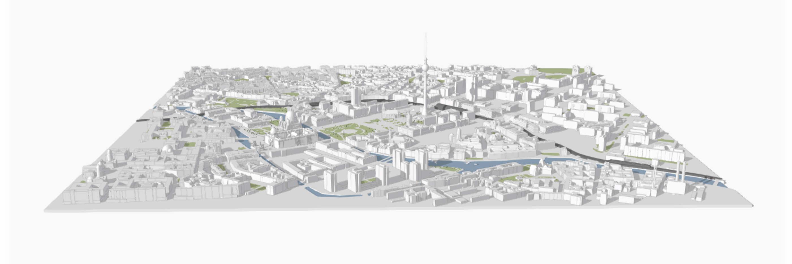
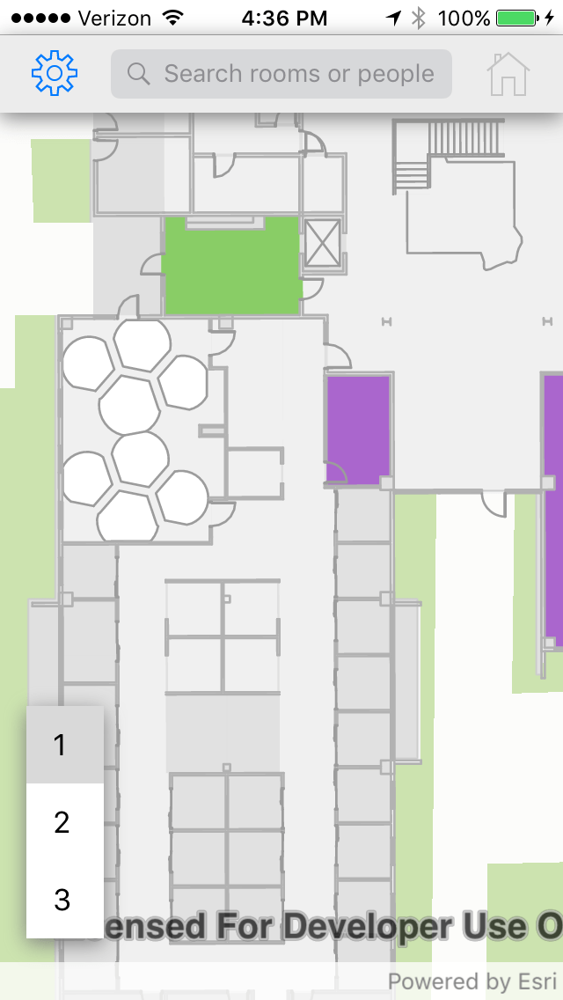
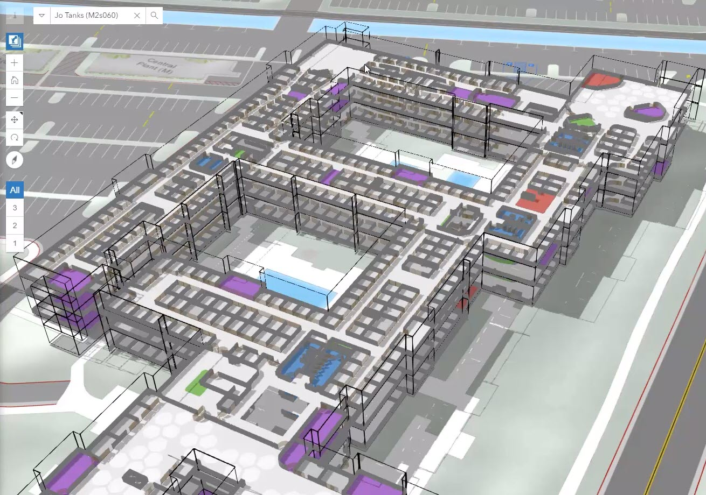
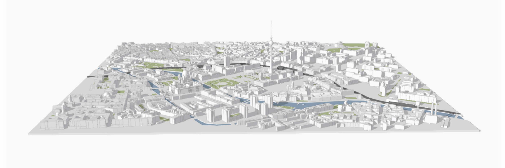
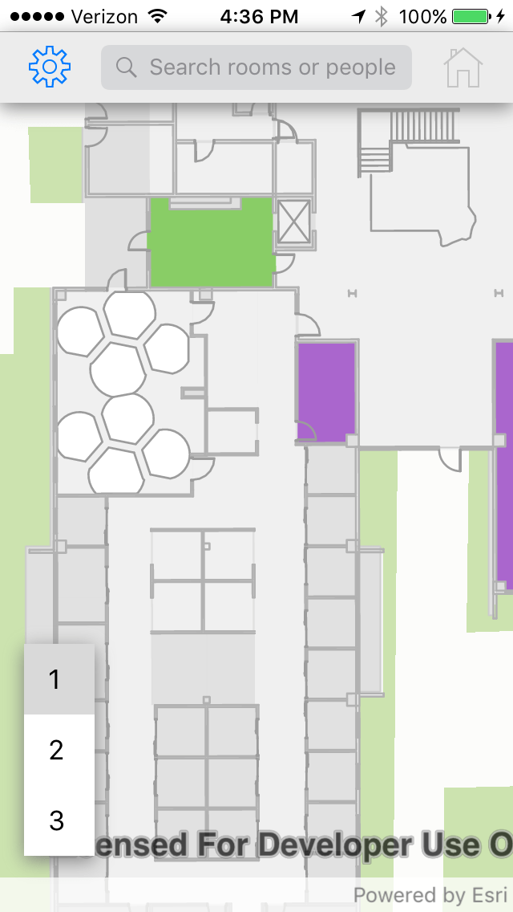
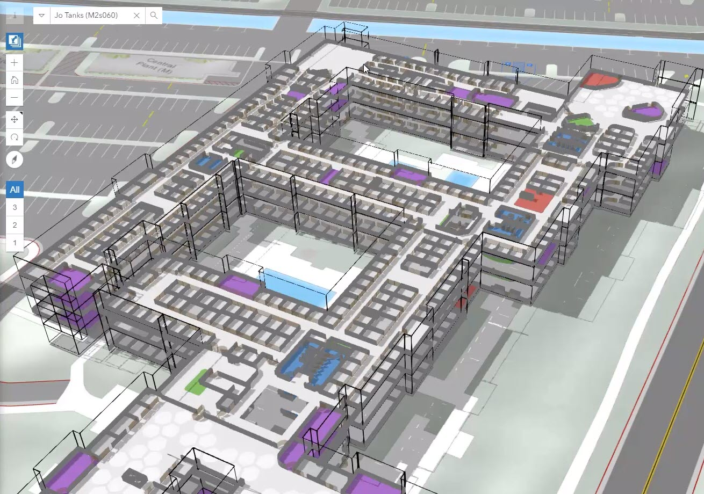

Sharing Urban Plans in 3D
Arno Fiva, Esri R&D Center Zürich
afiva@esri.com | Twitter: @arnofiva
Geo Berlin Meetup, 5. June 2019
Why 3D maps?
Provide a more intuitive representation


WebGL Frameworks
Rendering
Mapping


Arno Fiva, Esri R&D Center Zürich
afiva@esri.com | Twitter: @arnofiva
Geo Berlin Meetup, 5. June 2019
Provide a more intuitive representation

